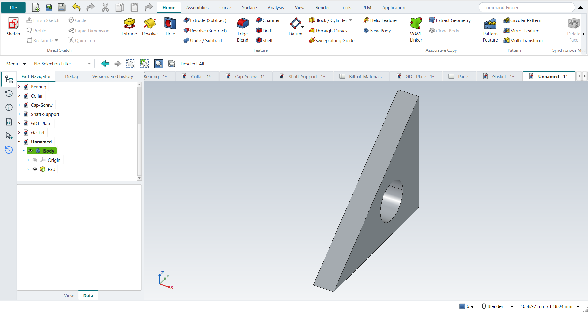

Tutorial J: Parametric constraints and relations
| Book |
Shih, Parametric Modeling with Siemens NX, ch. 5 |
| You learn |
Geometric constraints, degrees of freedom, Fix and Relax, dimension names and formulas |
| Sizes |
An 88.9 mm (3.5 in) plate. The triangle’s own sizes are in figures only. |

In short
-
A triangle; Perpendicular, a length and an angle; Fully Fixed; undo and Coincident instead; location dimensions; Relax Constraint on Perpendicular; Vertical; a tangent circle.
-
At every step, FreeCAD’s Under-constrained: N Degrees of Freedom or Fully constrained is compared with NX’s status line. It matches the book’s state each time.
-
Extrude the plate.
-
Name the dimensions and drive them with the book’s formulas after
=, for example=Constraints.width / 5 * 1.6; the hole is a third of the height. -
Two size changes, 25 × 15 and 25 × 20; the hole follows.
Step by step
| # | In the book (NX) | In FreeCAD NX-Style | Result | Notes |
|---|---|---|---|---|
J1 |
File > New, Model template |
Ctrl+N |
same |
|
J2 |
Extrude (X), YZ plane of the datum CSYS |
X key, plane row + MB2 |
same |
picked YZ-plane (Base plane) |
J3 |
Profile: a triangle with a horizontal base |
Z key + 4 MB1 clicks + MB2 |
same |
3 lines; implicit constraints ['Coincident', 'Horizontal']; DoF 5; FreeCAD says 'Under-constrained: / 5 Degrees of Freedom' |
J4 |
Perpendicular: the two inclined lines, OK |
both lines selected + ribbon 'Sketch › Constraints > Perpendicular' |
same |
angle between them 90.000° (90 wanted); DoF 4; 'Under-constrained: / 4 Degrees of Freedom' |
J5 |
Dimensions: base length, angle to the right line; the triangle still moves |
line + ribbon 'Sketch › Constraints > Distance' = 120 mm, two lines + 'Angle' = 60° (typed in FreeCAD’s dimension dialog) |
same |
base 120.000 mm; DoF 2 (size fixed, position free, as in the book); 'Under-constrained: / 2 Degrees of Freedom' |
J6 |
Fix Curve on one line: fully defined |
line + ribbon 'Sketch › Constraints > Fully Fixed' |
same |
DoF 0, fully constrained True; NX turns the sketch black and says it is fully defined, FreeCAD says 'Fully constrained' |
J7 |
Undo, then Coincident: the left corner on the sketch origin |
Ctrl+Z (DoF back to 2); Vertex1 + origin + ribbon 'Sketch › Constraints > Coincident' |
same |
corner at (0.000, 0.000); DoF 0; 'Fully constrained' |
J8 |
Undo, then location dimensions from the Y axis and the X axis |
Ctrl+Z (DoF 2); corner + Y axis, corner + X axis, ribbon 'Sketch › Constraints > Distance', 25.4 each |
same |
corner at (25.400, 25.400); DoF 0; 'Fully constrained' |
J9 |
Delete the angle, relax Perpendicular, Vertical on the right line |
angle + Delete; Perpendicular + ribbon 'Sketch › Constraints > Relax Constraint'; line + 'Sketch › Constraints > Vertical' |
same |
DoF after each: 1, 2, 1 (the book: one more constraint needed); 'Under-constrained: / 1 Degrees of Freedom' |
J10 |
Vertical dimension: fully constrained |
right line + ribbon 'Sketch › Constraints > Distance' = 72 mm |
same |
DoF 0; 'Fully constrained' |
J11 |
Circle inside, Tangent to the left inclined line |
O key + 2 MB1 clicks + MB2; circle + line + ribbon 'Sketch › Constraints > Tangent' |
same |
DoF 2 (centre still slides along the line); 'Under-constrained: / 2 Degrees of Freedom' |
J12 |
Match the figure: circle located from the right side and the base, a diameter |
values applied |
differs |
DoF 0; 'Fully constrained'; the figure’s values are not in the text |
J13 |
Extrude, plate thickness 3.5 in |
Ctrl+Q, 'lengthEdit' = 88.9 mm, MB2 = OK |
same |
thickness 88.900 mm; sketch Sketch |
J14 |
Show the dimension names; enter p8/5*1.6 and p10/4*1.2; hole = 1/3 of the height |
constraints renamed (width, height, hx, vy, dia) and given formulas |
differs |
FreeCAD names a dimension in its properties (NX: p0, p1 … automatically) and takes a formula after '=' in the dimension dialog: {'hx': 'Constraints.width / 5 * 1.6', 'vy': 'Constraints.height / 4 * 1.2', 'dia': 'Constraints.height / 3'} |
J15 |
Change the triangle to 25 x 15 in: the hole follows |
width = 635 mm, height = 381 mm |
same |
circle from the right side, from the base, diameter: 203.200, 114.300, 127.000 mm (formulas: 203.200, 114.300, 127.000) |
J16 |
Change it to 25 x 20 in: location and size follow |
width = 635 mm, height = 508 mm |
same |
circle from the right side, from the base, diameter: 203.200, 152.400, 169.333 mm (formulas: 203.200, 152.400, 169.333) |
J17 |
The part is shown in the graphics window |
render of the graphics window |
same |
6.4% of the view shows the part |
| Result | Means |
|---|---|
same |
The book’s NX steps work as written. |
differs |
It works, but the FreeCAD way is different; the notes say how. |
limit |
The book’s way fails in FreeCAD itself; a workaround follows in the next steps. |
missing |
FreeCAD has no such function; a stand-in follows. |
skipped |
Not replayed; the notes give the reason. |
FAILED |
Did not work. |